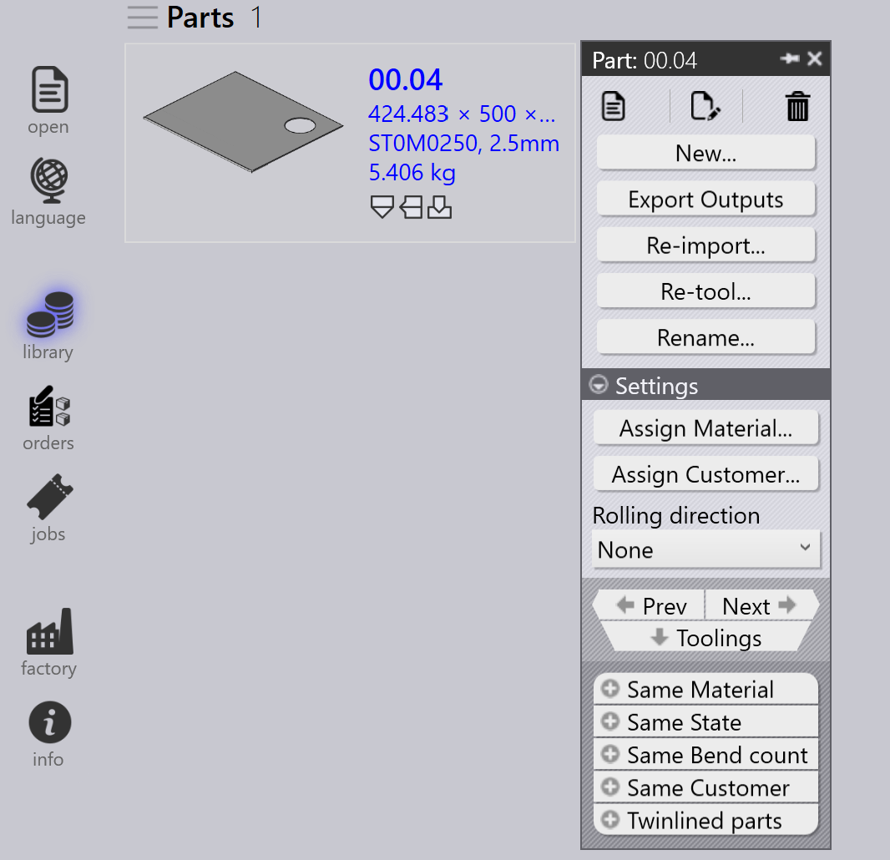

Tooling validation
T\u00e4ss\u00e4 osiossa kuvataan, kuinka k\u00e4ytt\u00e4\u00e4 ja muokata osien ty\u00f6st\u00f6tietoja TruSmartCAM-sovelluksessa.
-
Napsauta mit\u00e4 tahansa osan ruutua hiiren kakkospainikkeella avataksesi osapaneelin ja k\u00e4ytt\u00e4\u00e4ksesi ty\u00f6st\u00f6vaihtoehtoja.

-
Napsauta Toolings vaihtaaksesi ensimm\u00e4iseen k\u00e4ytett\u00e4viss\u00e4 olevaan ty\u00f6stettyyn instanssiin.
-
Vaihtoehtoisesti napsauta suoraan ty\u00f6stetty\u00e4 instanssia n\u00e4hd\u00e4ksesi koneen tiedot ja ty\u00f6st\u00f6vaihtoehdot.
-
K\u00e4yt\u00e4
 Open in read-only mode for viewing -toimintoa.
Open in read-only mode for viewing -toimintoa. -
K\u00e4yt\u00e4
 Check-out the document for editing -toimintoa.
Check-out the document for editing -toimintoa. -
Valittu ty\u00f6stetty instanssi avautuu TecZone- tai MetaCAM-sovelluksessa.
-
Suorita manuaaliset ty\u00f6st\u00f6tarkistukset ja tee tarvittavat muutokset.
-
Kun yrit\u00e4t tallentaa, Unsaved Changes -valintaikkuna kehottaa sinua vahvistamaan muutokset.
-
Napsauta Yes jatkaaksesi tallentamista.
-
J\u00e4rjestelm\u00e4 suorittaa ty\u00f6st\u00f6jen validoinnin uudelleen tallentamisen j\u00e4lkeen.
-
Jos virheit\u00e4 ei ole, vaihtoehto tallentaa muutokset TruSmartCAM-sovellukseen tulee n\u00e4kyviin.
-
Jos ty\u00f6st\u00f6virheit\u00e4 l\u00f6ytyy, virheilmoitus n\u00e4ytet\u00e4\u00e4n:

-
Tallentamisen j\u00e4lkeen osien ty\u00f6st\u00f6jen tila p\u00e4ivitet\u00e4\u00e4n osakirjastossa.
-
Vihre\u00e4 v\u00e4ri ty\u00f6stetyss\u00e4 instanssissa ilmaisee, ett\u00e4 se on tarkistettu sis\u00e4\u00e4n.

-
Ty\u00f6stetyn instanssin tekij\u00e4 p\u00e4ivitet\u00e4\u00e4n viimeksi sit\u00e4 muokanneeksi henkil\u00f6ksi.
-
User-edited -kentt\u00e4 ilmaisee, onko ty\u00f6stetty\u00e4 instanssia muokattu manuaalisesti. Kun k\u00e4ytt\u00e4j\u00e4 tarkistaa instanssin ulos ja tekee muutoksia, t\u00e4m\u00e4 kentt\u00e4 asetetaan automaattisesti arvoon Yes tallennettaessa.

-
Jos osaa muokataan parhaillaan, sen ruudussa n\u00e4kyy k\u00e4ytt\u00e4j\u00e4kuvake.
-
Hiiren vieminen ruudun p\u00e4\u00e4lle n\u00e4ytt\u00e4\u00e4, kuka tarkisti sen ulos ja milloin se tarkistettiin ulos.
-
Kun osa on tarkistettu ulos,
Check-out the document for editing -vaihtoehto on
poissa k\u00e4yt\u00f6st\u00e4 samalle ty\u00f6stetylle instanssille, ja
 Cancel Check-out -vaihtoehto tulee k\u00e4ytt\u00f6\u00f6n.
Cancel Check-out -vaihtoehto tulee k\u00e4ytt\u00f6\u00f6n.